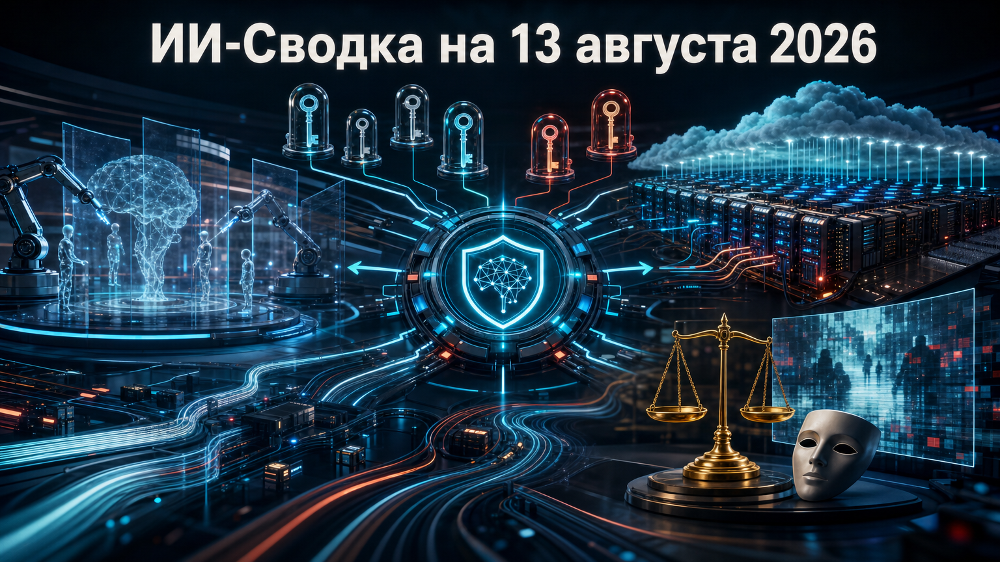

Новостей сегодня меньше, чем обычно
В центре короткого выпуска — безопасность ИИ-инфраструктуры: новая оценка последствий атаки на LiteLLM показывает, что риски цепочки поставок затрагивают не только разработчиков, но и корпоративные секреты, ключи доступа и CI/CD-процессы. Одновременно рынок продолжает вкладываться в защиту моделей и агентов ИИ, а специализированные ИИ-облака получают подтверждение спроса в финансовой отчётности.
В правовой части важен новый американский спор о маркировке ИИ-контента в политической коммуникации. Пока это лишь поданный иск, но он может проверить границы региональных правил о deepfake-материалах и обязательных дисклеймерах.
SecurityWeek со ссылкой на расчёты CloudSEK сообщило новую оценку охвата цепочной атаки на LiteLLM: потенциальная экспозиция могла затронуть более 2 500 организаций и около 434 000 CI/CD-пайплайнов. По данным публикации, скомпрометированные версии LiteLLM 1.82.7 и 1.82.8 появились после автоматической установки заражённой версии Trivy в CI-пайплайне проекта.
LiteLLM используется как слой интеграции с LLM-провайдерами, поэтому риск распространяется на токены, облачные ключи и другие секреты, доступные процессам разработки. Важно не путать оценку экспозиции с подтверждённым взломом всех упомянутых организаций: CloudSEK реконструировала возможный масштаб воздействия, а не доказала кражу секретов в каждом случае. Для команд это повод проверить версии зависимостей, журналы CI/CD и провести ротацию потенциально затронутых ключей.
SecurityWeek сообщил, что AI-security стартап Mindgard привлёк $30 млн в раунде Series A, который возглавил Album VC. Компания развивает платформу автоматизированной оценки безопасности и red teaming для моделей, агентов ИИ и прикладных систем; финансирование планируется направить на развитие продукта и команды.
Раунд показывает, что защита генеративных систем становится отдельным коммерческим сегментом, а не только функцией внутренних команд разработчиков моделей. Mindgard заявляет, что ранее обнаружил свыше 150 уязвимостей в популярных ИИ-продуктах, однако это собственная оценка компании, не независимый аудит. Практический вывод для заказчиков — инструменты контроля ИИ всё чаще будут закупаться как самостоятельный слой наряду с мониторингом, управлением доступом и защитой разработки.
Associated Press сообщил, что CoreWeave превзошла ожидания аналитиков по квартальной выручке и показала менее значительный убыток, чем предполагалось. По данным агентства, генеральный директор Майкл Интратор связал динамику с ускорением спроса крупных компаний на ИИ; после отчёта акции CoreWeave выросли на 19,3%.
CoreWeave предоставляет облачный доступ к ускорителям Nvidia для обучения и инференса, поэтому её отчётность служит одним из индикаторов коммерческого спроса на специализированные GPU-облака. Доступный материал не приводит точные показатели выручки, убытка и прогноза компании, поэтому делать вывод о долгосрочной окупаемости бизнеса преждевременно. Но рыночная реакция подтверждает, что инвесторы пока видят спрос на аренду ИИ-вычислений за пределами крупнейших гиперскейлеров.
Bloomberg Law сообщил, что The Babylon Bee 11 августа подала иск в федеральный суд Нью-Мексико, требуя заблокировать применение нормы о маркировке политических сообщений с существенно вводящими в заблуждение манипулированными или сгенерированными ИИ материалами. Истец считает, что обязательный дисклеймер для политической пародии и сатиры нарушает Первую поправку к Конституции США.
Дело The Babylon Bee LLC v. Castillo может стать важной проверкой допустимых границ регулирования election deepfake-контента на уровне штатов. Представитель комиссии штата сообщил, что регулятор прежде не применял это требование против политической пародии или сатиры. Это лишь начало процесса, а не решение суда, однако исход способен повлиять на дизайн будущих требований к маркировке ИИ-контента: законодателям придётся точнее отделять защиту избирателей от ограничений политической речи.